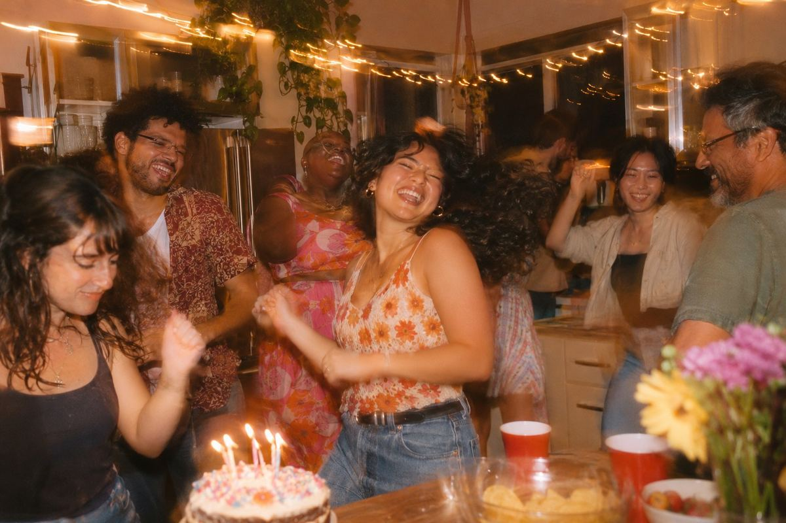

Birthday Party Photo Ideas: 35 Shots Worth Taking
A printable shot list, plus lighting, booth and display ideas for any birthday.

Short answer: The best birthday party photo ideas follow the party in order: details before guests arrive, arrivals, candids, the cake from three angles, one group photo, the birthday person with each guest, and the after-party mess. Use flash on purpose in dim rooms, let candles light faces on their own, and collect everyone’s photos in one shared roll that reveals the next morning.
It’s easy to leave a birthday party with fifty photos of the cake and none of the birthday person with their grandparents. These birthday party photo ideas start with a printable 35-shot list, then cover the techniques behind the hard ones: the cake, the group photo, dim rooms, a DIY photo booth, ways to display the photos and how to get everyone’s shots in one place.
Birthday party photo ideas: a printable 35-shot list
Print this or screenshot it, then hand it to whoever is on camera duty. It runs in party order, so you can work down it as the night goes.
| # | Shot | When |
|---|---|---|
| 1 | The room or table, wide, before anyone touches it | Before guests |
| 2 | The cake, untouched, at eye level | Before guests |
| 3 | One decoration up close: a balloon, the banner, a place card | Before guests |
| 4 | The birthday person getting ready, or the setup scramble | Before guests |
| 5 | The empty couch or dance floor, for a before-and-after pair | Before guests |
| 6 | The first guest through the door | Arrivals |
| 7 | Hugs at the door | Arrivals |
| 8 | Gifts and cards changing hands | Arrivals |
| 9 | The birthday person’s face when someone unexpected walks in | Arrivals |
| 10 | The room filling up, from a high corner | Arrivals |
| 11 | Someone mid-laugh, mid-story | Candids |
| 12 | Hands: glasses clinking, plates being passed | Candids |
| 13 | The kitchen crowd | Candids |
| 14 | The kids’ table, or the dog underfoot | Candids |
| 15 | The loudest moment of a game | Candids |
| 16 | Dancing, with flash to freeze it | Candids |
| 17 | The quiet conversation in the corner | Candids |
| 18 | Candles being lit | The cake |
| 19 | Angle 1: straight on, the birthday person lit by candles | The cake |
| 20 | Angle 2: over their shoulder, the crowd singing | The cake |
| 21 | Angle 3: from above or the side, the whole table | The cake |
| 22 | The blowout, as a burst | The cake |
| 23 | The reaction right after | The cake |
| 24 | The first slice on its way to someone | The cake |
| 25 | The everyone photo, posed | Group |
| 26 | The same group, all looking at the birthday person | Group |
| 27 | The silly one: everyone pointing, cheering or jumping | Group |
| 28 | The birthday person with each guest or couple, same spot | Portraits |
| 29 | With the oldest and the youngest guest | Portraits |
| 30 | With whoever organized the party | Portraits |
| 31 | With whoever traveled farthest | Portraits |
| 32 | Gifts being opened, from the side so you see faces | After-party |
| 33 | The last people standing | After-party |
| 34 | The aftermath: crumbs, wrapping paper, empty glasses | After-party |
| 35 | The birthday person, shoes off, feet up | After-party |
Shot 28 is the one people treasure later. Pick a spot with good light, put the birthday person there, and bring each guest or couple over for one photo in the same framing. It takes ten minutes and turns into a set: everyone who showed up, side by side.
How to photograph the birthday cake from three angles
The candles last about one round of “Happy Birthday,” so plan the cake shots before the lights go down. Three angles cover it, ideally with three people shooting:
- Straight on. Stand across the table from the birthday person, at their eye level, so the candles light their face from below. This is the portrait.
- Over the shoulder. Stand behind them and shoot past their head toward the guests: the singing faces, lit by the same candles.
- From above or the side. Step onto a sturdy chair or stand at the end of the table for the whole scene: cake, hands, people leaning in.
Keep the flash off while the candles are lit; it flattens the glow you came for. Nikon’s birthday party photo tips make the same point: natural candlelight makes a more pleasing photo than flash, and you should take lots of shots as the candles go out. On iPhone, drag the shutter button left to shoot a Burst just before they blow, and lift your finger to stop. Once the candles are out, flash is fine again for the reaction.
Lighting tricks for dim party rooms
Party light is usually the hardest light: warm, dim and often coming from behind people. You have two good options and a few small fixes.
Use flash on purpose
Direct flash gets a bad name, but it’s what gives disposable-camera party photos their look: crisp faces, dark backgrounds, motion frozen on the dance floor. Use it close, a few steps away, aimed at faces rather than across a big room. Switch it on deliberately instead of leaving it on Auto, so you decide which shots get it. Our disposable camera party playbook leans into exactly this look.

Or go without flash
For candles, string lights and the mood of a room, turn the flash off. On iPhone 11 and later, Night mode turns on by itself in low light. Apple’s Night mode guide says to hold the phone steady until the capture finishes, and notes that turning on the flash or Live Photos switches Night mode off. Brace your elbows on a table, and ask people to hold still for the few seconds the on-screen counter shows.
Quick fixes
- Move people away from bright windows and TV screens; backlight turns faces into silhouettes.
- Tap the birthday person’s face on screen before you shoot, so the phone sets focus and brightness for them, not the lamp behind them.
- Point a lamp at a white wall or ceiling for soft light over a whole corner.
- Use a second phone’s flashlight, held off to one side, as a portable light for portraits.
- Wipe the lens. Phones live in pockets, and a greasy lens puts a haze around every light.
| Situation | Use | Why |
|---|---|---|
| Candles, string lights | Flash off, hold steady | Keeps the warm glow |
| Dancing in a dark room | Flash on, get close | Freezes motion and adds the party look |
| Group photo indoors at night | Flash on, everyone within a few steps | Faces stay sharp and bright |
| Toasts and speeches | Flash off, tap to focus on the speaker | Doesn’t interrupt the moment |
For more on shooting at night, from Night mode to the dance floor, see how to take good photos at a party.
The group photo trick that gets everyone in
The posed group photo is rarely the keeper. The one right after it usually is.
- Prop your phone at chest to eye height on a shelf, a stack of books or a mini tripod, so the photographer can be in it too. Use the camera’s self-timer, or the Camera Remote app if you have an Apple Watch.
- Arrange people fast: tallest at the back, kids in front, the birthday person front and center. Every face should be able to see the lens.
- Take three versions in under a minute: the posed one, then “everyone look at [name],” then a silly one with everyone cheering or pointing at the birthday person.
The second version, with everyone looking at the birthday person, is the one that ends up framed: it’s candid, it’s warm and it shows who the party was for. In a dark room, use flash and keep everyone within a few steps of the camera.
DIY birthday photo booth and photo wall ideas
A booth gives guests a reason to photograph each other, and it keeps the posed shots in one corner. None of these need a rental:
- Balloon garland with the age in foil numbers.
- Streamer curtain in two colors, taped across a doorway or wall.
- Giant empty frame, thrifted and painted, for guests to hold up.
- Bedsheet backdrop with string lights clipped across it.
- Wrapping-paper wall in the birthday person’s favorite color.
- Birth-year wall: props, magazine covers and record sleeves from the year they were born.
- Then-and-now corner: a big print of the birthday person as a baby, for guests to copy the pose.
- Prop basket: crowns, sunglasses, party hats and blank signs with a marker.
- Clothespin wall: twine across a wall for instant prints or booth strips, filled up as the party goes.
- Tinsel doorway for a winter birthday.
For the booth itself, set a phone on a tripod at face height, put a lamp or ring light just behind the phone pointing at guests (never behind them), and tape up a small sign that explains how it works. A booth app with a countdown saves you from standing there pressing the shutter; Filmsera’s version is covered below.
Birthday party photo display ideas
- A photo timeline. One photo of the birthday person per year, or per decade for a big milestone, along a wall, a string or the length of the buffet, each with a small year label. Keep the prints the same size so it reads as a line, not a pile.
- Then-and-now table cards. A childhood photo and a recent one on each table, with a line about each.
- Guess the baby. Ask guests to send a baby photo in advance, number them on a board and let people guess. Best at milestone parties.
- A slideshow on loop. A TV in the corner playing old photos with the sound off. Our birthday slideshow ideas cover structure and photo counts.
- A booth-strip guest book. Guests stick their strip on a page and write a line beside it.
- Prints after the party. Send the birthday person a small stack of prints from the night; our guide to printing your photos covers what to print and how.
How to collect everyone’s photos: one shared roll
At the end of a party, the photos are scattered across 20 phones, and plenty never leave them. A shared album works when everyone is on the same platform and remembers to upload; our guide to the best way to share photos with a group compares those options. A shared camera removes the remembering.
With Filmsera, the party becomes one shared roll:
- Create a film in the iPhone app and name it. For a next-morning reveal, choose “Custom” and set a time like 10 a.m.; the “Tonight,” “Tomorrow” and “In 3 days” presets all develop at 9 p.m. A morning reveal gives everyone something to open over coffee; see choosing the right reveal time.
- Save the QR from the invite card and print it for the door or the drinks table, or text the invite link. Guests join from the free iPhone app or their phone’s browser, with no app or account, and shoot on their own phones.
- Each guest gets 12 shots by default, and you can raise it to 24 on a free or Party film. A limited roll keeps people choosing moments instead of spraying.
- Photos stay hidden until the reveal, including from you. The next morning, the whole roll appears at once for everyone in the film, each photo tagged with who took it, along with a short recap reel.
The Photo Booth mode fits the booth corner above: 6 layouts (strips of three or four, a six-frame filmstrip, a grid, a duo and a print layout), a 3-2-1 countdown and pose hints. Finished strips can be shared as they are, exported in a Story-sized version, saved print-ready or added straight to the party’s film.

What to know first (as of November 2026): the host needs an iPhone, browser guests take photos only, and video clips need the app and a Celebration or Wedding film. Hosting is free for up to 10 guests, and a bigger party needs a one-time pass for that film. Free recaps export at 480p with a watermark (HD needs Filmsera Pro or a film pass), and free films keep photos for 30 days after the reveal, so save the ones you want. If your group already shares one album happily, that may be all you need. Otherwise, see how Filmsera works for birthdays and house parties.
Filmsera turns every guest’s phone into one shared party camera, and the whole roll develops at once at the time you pick. Get Filmsera on the App Store
FAQ
What photos should you take at a birthday party?
Work through the party in order: the room and cake before guests arrive, arrivals and hugs, candids in full swing, the cake from three angles, one group photo, the birthday person with each guest, and the after-party mess. A printed shot list helps, especially if someone else is holding the camera for part of the night.
How do you take good birthday photos in a dark room?
Choose on purpose. For dancing and group shots, turn the flash on and get within a few steps of people. For candles and string lights, turn the flash off and hold the phone steady; on iPhone 11 and later, Night mode switches on by itself in low light. Keep people out of backlight and wipe the lens first.
How do you get everyone in a birthday group photo?
Prop your phone at chest to eye height, use the self-timer or a watch remote, and arrange people tallest at the back with the birthday person front and center. Take three versions quickly: posed, everyone looking at the birthday person, and a silly one. The second is usually the keeper.
How can guests share birthday party photos with the host?
The simplest options are a shared album or an upload link, which work when guests remember to add their photos. A shared camera such as Filmsera skips that step: guests scan a QR code, shoot into one roll from their own phones and the photos appear together at the reveal, each tagged with who took it.
What can you do with birthday party photos afterward?
Send the birthday person a small stack of prints, build a photo timeline for next year’s party, or cut the best shots into a short slideshow or recap reel. A guest book made of booth strips works well too. Whatever you choose, save the photos you love to your own phone or computer.
Is it okay to post photos of other people’s kids from a birthday party?
Ask their parents first, every time. Some families keep children off social media entirely, and a quick message before you post avoids an awkward request later. When in doubt, share kids’ photos privately with the families instead, and post only the shots of your own family or of adults who said yes.
Written by the Filmsera team
Filmsera is a shared disposable camera app for iPhone: create a film for your event, let guests join by QR code from the app or their phone's browser, and open the whole roll together at the reveal. Download on the App Store →
Photos in this article are illustrations created for Filmsera, not customer photos. App screenshots are from Filmsera on iPhone.